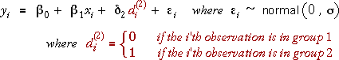
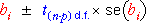

Inference for slope and group effect
We again consider the model,

In this model, we are particularly interested in the parameters β1 and δ2.
We can apply standard GLM methodology to test whether these two parameters are zero. The test divides the corresponding least squares estimate by its standard error to form a t-statistic,

This t-statistic is compared to a t distribution with (n - 3) degrees of freedom to find the p-value for the test as usual.
Confidence intervals can also be found from

where p is the number of linear parameters in the model, 3.
Gas consumption and insulation
This data set contains data about weekly gas consumption in an English house and average outside temperature for 26 weeks before cavity-wall insulation was installed and 18 weeks after.
The table shows the p-values for the three parameters. The p-values for the two 'slope' parameters are both close to zero, so we should conclude that:
Both outside temperature and installation of insulation have affected gas consumption.
This is hardly surprising!!!
The check-boxes can be used to remove terms from the model. You may find it instructive to look at how removal of each term affects the model's representation on the scatterplot.
Observational and experimental data
Data of this type arise in two different ways.
In an experiment, it may be possible to ensure that the explanatory variables are orthogonal — uncorrelated with each other.
If the same values for the numerical explanatory variable, X, are used in both groups, X is orthogonal to the indicator variable for groups.
Orthogonality simplifies interpretation of the least squares estimates.
If X and the indicator variable for groups are orthogonal, their LS estimates do not depend on whether the other variable is in the model.
Gas consumption and insulation
Although this was an experiment rather than an observational study (the weeks for which there was insulation were selected by the experimenter), the temperatures could not be controlled, so the temperatures and the indicator variable are not orthogonal. As a result, deleting either explanatory term in the diagram above alters the least squares estimate of the other term.
Tool life on lathe
The following 16 observations result from an experiment in which the effective life (hrs) of a cutting tool used on a lathe was modelled in terms of the lathe speed (rpm). Two different tool types were used in the experiment. The experiment was designed to use the same lathe speeds for both tools (two runs at 500 rpm, two at 600 rmp, two at 700 rmp and two at 600 rmp). A consequence of this experimental design is that the lathe speed and tool type are orthogonal.
From the p-values, we should conclude that:
Use the checkboxes to delete variables from the model and observe that the least squares coefficient for each variable is unaffected by whether the other variable is in the model.